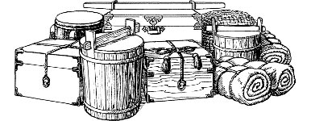
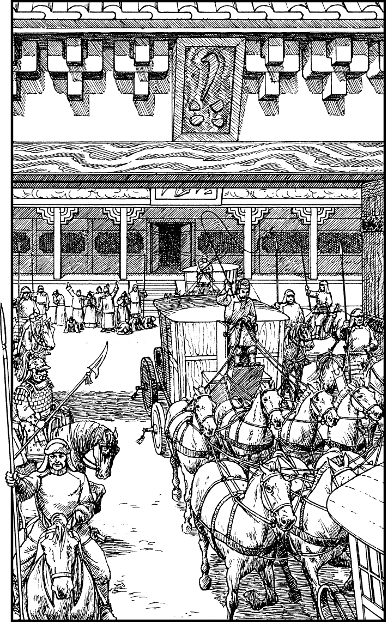

122
Together you and Chan make your way outside to the palace courtyard where the Imperial Caravan waits in readiness for the long journey east. It consists of three large carriages, each drawn by a team of eight horses, plus an escort of twenty Imperial Cavalry troopers clad in plain crimson tunics. The golden ornamentation that once embellished these carriages has been stripped away, and their fine lacquered sides have been painted a dun brown to camouflage their true origins. Chan approves of their ordinary appearance for it will be far less likely to attract unwanted attention on the long road ahead.
{kind=link}

With a deft flick of his kirusami, Chan motions to a stable guard to bring him his horse—a proud stable stallion. The young man complies, and he also brings an additional mount, a dappled chestnut mare. He hands the reins of this horse to you.
‘We’ll ride together, my lord,’ says Chan, as he settles himself into his saddle. You mount your horse, and then together you watch in silence as the aged Khea-khan and his family arrive in the courtyard. Devoted attendants usher them into the middle carriage, and as soon as the doors are closed, Chan gives the signal for the column to move off. Slowly the carriages trundle through the gates of the palace and out into the city beyond, preceded by the Imperial Cavalry troopers. You and Chan follow behind the third carriage, and as you are passing through the gates, the last sound you hear is the collective sobbing of the Khea-khan’s loyal servants, those he has had to leave behind.

To continue, turn to 58.